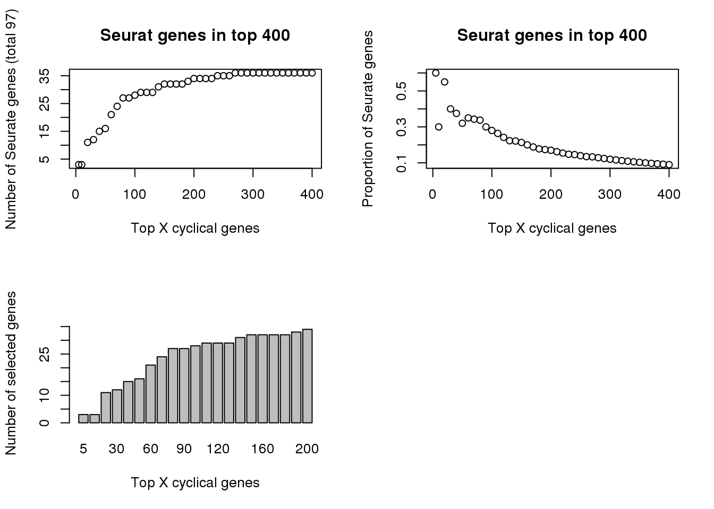

Last updated: 2018-07-15
Code version: 0915285
Consider top X cyclical genes, check GO categories.
genes_list <- readRDS(file = "../data/results/results_topgenes.rds")
all_genes <- genes_list[length(genes_list)][[1]]
library(biomaRt)
ensembl <- useMart(biomart = "ensembl", dataset = "hsapiens_gene_ensembl")
symbols <- getBM(attributes = c("hgnc_symbol",'ensembl_gene_id'),
filters = c('ensembl_gene_id'),
values = all_genes,
mart = ensembl)
genes_list_symbols <- lapply(1:length(genes_list), function(i) {
ll <- genes_list[i][[1]]
#symbols[match(ll,symbols$ensembl_gene_id),]
symbs <- symbols[which(symbols$ensembl_gene_id %in% ll),]
non_symbs <- ll[which(!(ll %in% symbols$ensembl_gene_id))]
df_non_symbs <- data.frame(hgnc_symbol=NA,
ensembl_gene_id=non_symbs)
out <- rbind(symbs, df_non_symbs)
out <- out[match(ll,out$ensembl_gene_id),]
return(out)
})
names(genes_list_symbols) <- names(genes_list)
saveRDS(genes_list_symbols,
"../output/method-train-classifiers-genes.Rmd/genes_list_symbols.rds")genes_list <- readRDS(file = "../data/results/results_topgenes.rds")
genes_list_symbols <- readRDS("../output/method-train-classifiers-genes.Rmd/genes_list_symbols.rds")
seurat.genes <- readLines(
con = "../data/cellcycle-genes-previous-studies/seurat_cellcycle/regev_lab_cell_cycle_genes.txt")
seurat.genes <- list(s.genes=seurat.genes[1:43],
g2m.genes=seurat.genes[44:97])
tmp <- sapply(genes_list_symbols, function(x) sum(x$hgnc_symbol %in% unlist(seurat.genes)))
par(mfrow=c(2,2))
plot(x=names(genes_list)[1:41],
tmp[1:41],
xlab="Top X cyclical genes",
ylab="Number of Seurate genes (total 97)",
main = "Seurat genes in top 400")
plot(x=names(genes_list)[1:41],
(tmp/as.numeric(names(genes_list)))[1:41],
xlab="Top X cyclical genes",
ylab="Proportion of Seurate genes",
main = "Seurat genes in top 400")
barplot(tmp[1:21],
ylim=c(0,36),
xlab="Top X cyclical genes",
ylab="Number of selected genes")
print(tmp[1:21]) 5 10 20 30 40 50 60 70 80 90 100 110 120 130 140 150 160 170
3 3 11 12 15 16 21 24 27 27 28 29 29 29 31 32 32 32
180 190 200
32 33 34 # library(gplots)
# venn(list(seurat=unlist(seurat.genes),
# peco=genes_list_symbols[[27]]$hgnc_symbol))
write.table(genes_list_symbols[[27]]$hgnc_symbol,
file = "../output/method-train-classifiers-genes.Rmd/topgenes.txt",
row.names=F,
col.names=F, quote=F)
write.table(genes_list_symbols[[length(genes_list_symbols)]][,1],
file = "../output/method-train-classifiers-genes.Rmd/allgenes.txt",
row.names=F,
col.names=F, quote=F)sessionInfo()R version 3.4.3 (2017-11-30)
Platform: x86_64-pc-linux-gnu (64-bit)
Running under: Scientific Linux 7.4 (Nitrogen)
Matrix products: default
BLAS/LAPACK: /software/openblas-0.2.19-el7-x86_64/lib/libopenblas_haswellp-r0.2.19.so
locale:
[1] LC_CTYPE=en_US.UTF-8 LC_NUMERIC=C
[3] LC_TIME=en_US.UTF-8 LC_COLLATE=en_US.UTF-8
[5] LC_MONETARY=en_US.UTF-8 LC_MESSAGES=en_US.UTF-8
[7] LC_PAPER=en_US.UTF-8 LC_NAME=C
[9] LC_ADDRESS=C LC_TELEPHONE=C
[11] LC_MEASUREMENT=en_US.UTF-8 LC_IDENTIFICATION=C
attached base packages:
[1] stats graphics grDevices utils datasets methods base
loaded via a namespace (and not attached):
[1] compiler_3.4.3 backports_1.1.2 magrittr_1.5 rprojroot_1.3-2
[5] tools_3.4.3 htmltools_0.3.6 yaml_2.1.16 Rcpp_0.12.17
[9] stringi_1.1.6 rmarkdown_1.10 knitr_1.20 git2r_0.21.0
[13] stringr_1.2.0 digest_0.6.15 evaluate_0.10.1This R Markdown site was created with workflowr